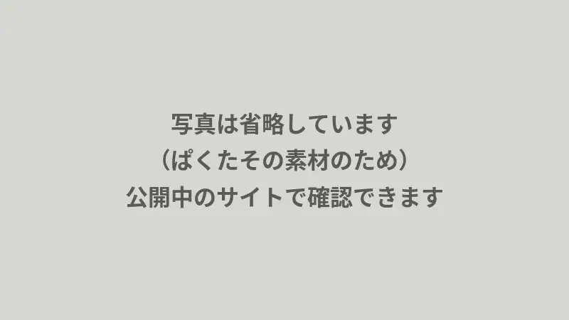
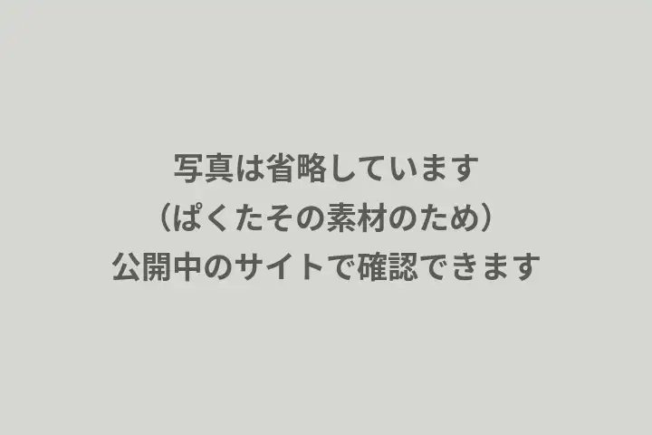
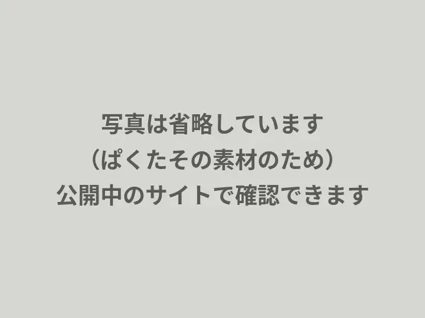

千草ヶ丘市の切削加工の工場です
試作1個から300個までの切削加工を承っています
アルミ・ステンレス・真鍮のブロックやシャフトが中心です。図面（PDFか手描きでも可）を送っていただければ、2営業日以内に見積りと納期をお返しします。

お受けしやすい仕事・お受けしにくい仕事
小さな工場のため、お受けしやすい仕事とそうでない仕事があります。合わない仕事は、最初にお伝えします。
お受けしやすい仕事
- 装置の試作部品（2〜3個）1回目を削ってから寸法を直す進め方で構いません。
- 壊れた治具の作り直し（現物から）図面がなくても、お預かりして測り、簡単な図面を起こします。
- 毎月数十個の継続品材料の手配と在庫の一部をこちらで持ちます。
お受けしにくい仕事
- 数千個を超える量産専用機のある工場のほうが安くなります。必要なら紹介します。
- 機械に載らない大きな部品載る大きさの上限は、事業内容の表に書いています。
- チタン・インコネルなどの難削材お受けできないことがあります。図面を見てから判断します。

素材写真（イメージ）。この会社の職人ではありません。 
素材写真（イメージ）。この会社の設備ではありません。 
素材写真（イメージ）。この会社の職人ではありません。
見本では素材写真を置いています。実際の制作では、この会社の工場と、許可を取った社員を撮影して差し替えます。
見積りの前に図面で確認すること
見積りは、実際に機械を動かす担当が段取りまで考えてから出しています。自動見積りより少し時間がかかりますが、「削ってみたら工具が届かなかった」という後戻りが減ります。
材質を変えれば安くなる箇所や、公差を少し緩めれば早くなる箇所があれば、見積りと一緒にお伝えします。
ご依頼から納品までの流れ図面の確認票受付No. ____
- 材質指定どおりの材料が手に入るか。代わりの材料で足りるか
- いちばん厳しい公差どの面を、どの機械で、何で測るか
- 工具が届くか深い穴・細い溝・内側の角の丸み
- 表面処理アルマイト・メッキが要るか。協力工場の日数を足す
- 数量と納期1個目の確認をはさむ時間があるか
費用の目安
金額は、材質・大きさ・公差・数量でかなり変わります。下の金額は見本用の架空の設定です。公開されている町工場の料金例を参考に、大きく外れない値にしていますが、一部は見本の価格です。

見本用の架空の設定です
- アルミの試作1個（手のひらほど・穴数か所）
- 18,000円〜
- 同じ部品を10個（1個あたり）
- 4,500円〜
- 現物から図面を起こす
- 15,000円〜
納品後に実際の声を載せる枠（見本では作り話を載せません）
お取引先の声
実際の制作では、何を頼んで何が助かったかを2〜3文で。社名が出せない場合は「装置メーカー・設計担当」のように、業種と役職だけにします。
